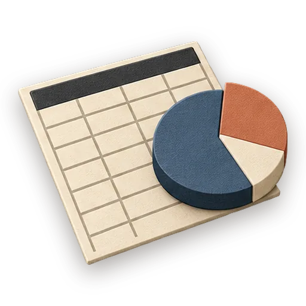
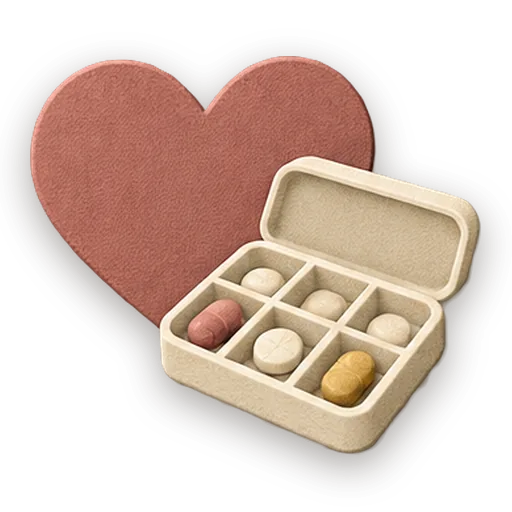
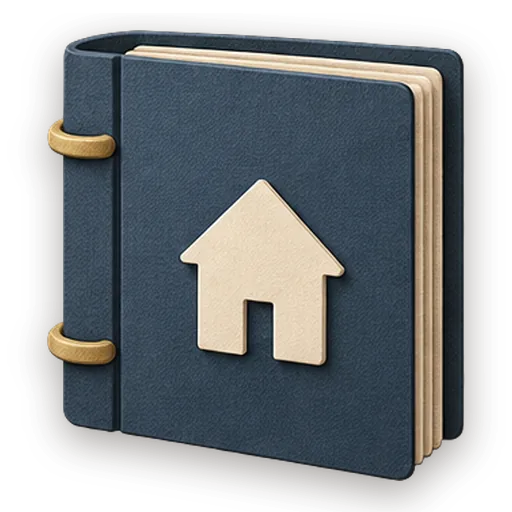

Data Analysis
Explore the datasets in a project folder. A live dashboard finds spreadsheets and data files and opens them in Gezel's file viewers.
Try it
Open in a full windowData Analysis running in your browser on sample data. Use the page, or talk with the researcher beside it: the conversation is scripted for this preview, and the changes stay in the page.
What’s inside
The crew
- Researcher Crew leadReads source, prior art, or external docs and files a substantive written analysis.
Start one
- Download Gezel for Mac, Windows or Linux. It’s free.
- Choose New project, then Data, then Data Analysis.
- Your researcher takes it from there, on the model you choose.
More apps to try
-

Home & Family Caregiving Binder Coordinate a loved one's care without losing the thread. Try it hereCrew: Care Coordinator1 craftbook -

Home & Family Household Manual The living manual for your home. Try it hereCrew: Home Keeper1 craftbook - Home & Family Meal Planner & Pantry Answer "what's for dinner?" once a week. Try it hereCrew: Meal Planner1 craftbook